<title>Matching Rows Round 3</title>
<meta name="claude:viewport-fit-sides" content="cover">
<style>
/* Layout: one reading column of numbered questions, each a short statement, its pictures (today, then the drawn proposal), then the recommendation. The same page as rounds 1 and 2, so the three read as one series. */
:root{
  --bg:#f3f5f7; --panel:#ffffff; --ink:#14181d; --ink-2:#4a5560; --edge:#d6dce2; --accent:#0e7fa3; --ring:#c77700; --tag:#e9eef2;
  --f-body:"Inter Tight","Segoe UI",system-ui,-apple-system,sans-serif; --f-head:"Barlow Condensed","Arial Narrow","Segoe UI",sans-serif;
}
@media (prefers-color-scheme: dark){:root:not([data-theme="light"]){--bg:#0d1014;--panel:#161b21;--ink:#e8edf2;--ink-2:#9aa7b3;--edge:#2a323b;--accent:#4cc3e6;--ring:#ffb020;--tag:#1f262e;color-scheme:dark}}
:root[data-theme="dark"]{--bg:#0d1014;--panel:#161b21;--ink:#e8edf2;--ink-2:#9aa7b3;--edge:#2a323b;--accent:#4cc3e6;--ring:#ffb020;--tag:#1f262e;color-scheme:dark}
body{background:var(--bg);color:var(--ink);font:15px/1.55 var(--f-body);padding-left:max(16px,env(safe-area-inset-left,0px));padding-right:max(16px,env(safe-area-inset-right,0px));padding-block:20px 48px}
main{max-width:980px;margin:0 auto;display:flex;flex-direction:column;gap:28px}
h1{font:700 30px/1.1 var(--f-head);letter-spacing:.02em;text-transform:uppercase;margin:0;text-wrap:balance}
h2{font:700 22px/1.2 var(--f-head);letter-spacing:.02em;margin:0;text-wrap:balance;display:flex;gap:10px;align-items:baseline}
h2 .n{background:var(--ring);color:#000;border-radius:7px;padding:0 9px;font-size:18px}
h3{font:700 15px/1.3 var(--f-body);margin:4px 0 0}
p{margin:0;max-width:68ch}
.lead{color:var(--ink-2)}
section{background:var(--panel);border:1px solid var(--edge);border-radius:14px;padding:18px max(16px,2vw);display:flex;flex-direction:column;gap:14px;min-width:0}
figure{margin:0;display:flex;flex-direction:column;gap:6px;min-width:0}
figure img{width:100%;height:auto;border-radius:8px;border:1px solid var(--edge);cursor:zoom-in;display:block}
figure.sm img{width:auto;max-width:100%}
figcaption{font-size:13px;color:var(--ink-2)}
.tag{display:inline-block;font:600 11px/1.6 var(--f-body);letter-spacing:.06em;text-transform:uppercase;background:var(--tag);border-radius:5px;padding:0 6px;margin-right:6px;color:var(--ink)}
.tag.drawn{background:var(--accent);color:var(--bg)}
.pair{display:grid;grid-template-columns:repeat(auto-fit,minmax(min(100%,300px),1fr));gap:12px;align-items:start}
.phones{display:grid;grid-template-columns:repeat(auto-fit,minmax(min(100%,180px),1fr));gap:12px;align-items:start}
.rec{background:var(--tag);border-radius:10px;padding:10px 12px;display:flex;flex-direction:column;gap:6px}
.rec b{color:var(--accent)}
ul{margin:0;padding-left:20px;display:flex;flex-direction:column;gap:4px}
.answer{border:2px dashed var(--accent)}
.zoom{position:fixed;inset:0;background:rgba(0,0,0,.88);display:flex;align-items:center;justify-content:center;z-index:20;padding:env(safe-area-inset-top,0px) max(8px,env(safe-area-inset-right,0px)) env(safe-area-inset-bottom,0px) max(8px,env(safe-area-inset-left,0px));overflow:auto;cursor:zoom-out}
.zoom img{max-width:none;width:min(1600px,200vw);height:auto}
@media (max-width:600px){.zoom img{width:220vw}}
</style>

<main>
  <header style="display:flex;flex-direction:column;gap:10px">
    <h1>Matching rows — round 3</h1>
    <p class="lead">All your round 3 answers are built. Answers 5–7 are just below, with one small question (8) they leave. Answers 1–4 come next. The questions as they were put to you stay at the foot of the page.</p>
    <p class="lead">In every picture the amber ring marks the place. A picture tagged <span class="tag">Today</span> is the app as it is. A picture tagged <span class="tag drawn">Drawn</span> is the change drawn on the real app. Tap any picture to enlarge it.</p>
  </header>

  <section>
    <h2>Built — your answers to 5–7</h2>
    <p>These are pictures of the built app. I pressed every button on the Tracker's bar at its new height, and each still does its job.</p>
    <div class="pair">
      <figure>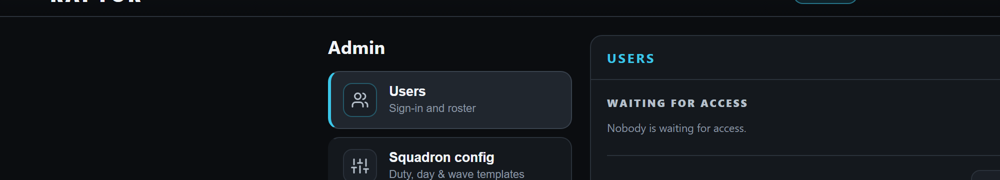<figcaption><span class="tag">Built</span>5 · Admin's title, at the size of Logic's name</figcaption></figure>
      <figure>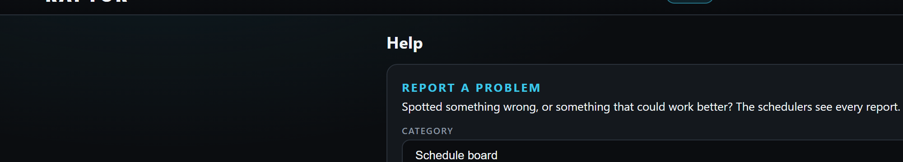<figcaption><span class="tag">Built</span>5 · Help's title, the same</figcaption></figure>
    </div>
    <figure>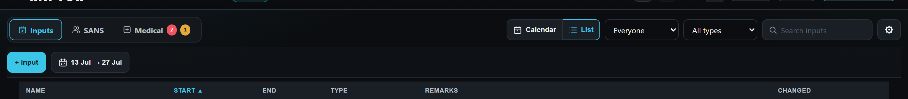<figcaption><span class="tag">Built</span>6 · Desktop Inputs list: "+ Input" and the dates button 36 tall, like the page's other buttons</figcaption></figure>
    <figure>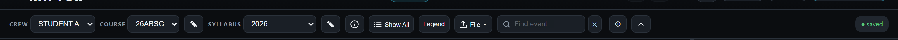<figcaption><span class="tag">Built</span>7 · The Tracker's bar on your PC: every control 30 tall, the bar no taller than before</figcaption></figure>
    <div class="phones">
      <figure>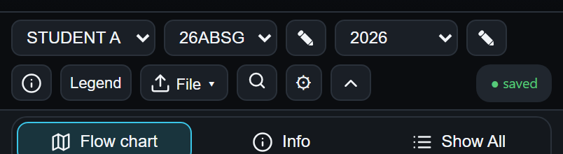<figcaption><span class="tag">Built</span>7 · Phone: every control 26, the bar no taller</figcaption></figure>
      <figure>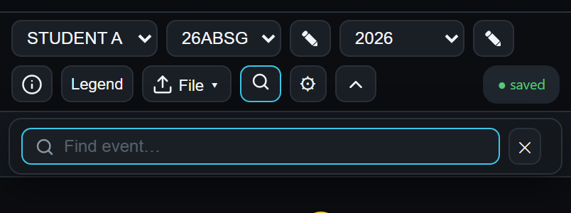<figcaption><span class="tag">Built</span>7 · Phone: the search box and its ✕, 26 too</figcaption></figure>
      <figure>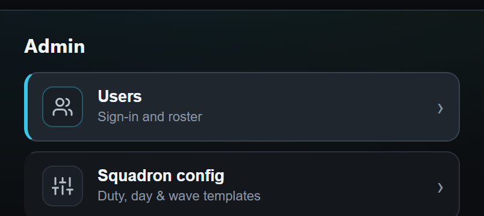<figcaption><span class="tag">Built</span>5 · Phone: Admin's title, at Logic's phone size</figcaption></figure>
    </div>
    <p>One addition: the Tracker's search box was 25 tall beside its own ✕. Your rule from today says a search box is as tall as the buttons beside it, so it is 30 too (26 on a phone).</p>
  </section>

  <section>
    <h2><span class="n">8</span> The Tracker's bar on a narrow desktop</h2>
    <p>On your PC (1536 wide) and on a phone the bar is exactly as tall as before. On a narrower desktop window, about 1050 to 1200 wide, the bar does not fit on one line. Its second line holds only Hide and the save corner (ringed). Those buttons were 23 tall, and now they are 30, so the bar is 2 taller there (87 to 89). Your answer said the bar grows no taller.</p>
    <div class="pair">
      <figure>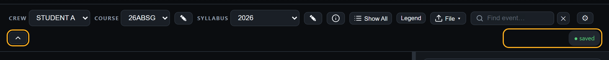<figcaption><span class="tag">Before</span>1100 wide: the second line as it was</figcaption></figure>
      <figure>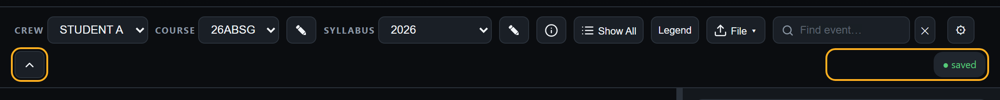<figcaption><span class="tag">Built</span>As built: Hide 30 tall, the bar 2 taller</figcaption></figure>
    </div>
    <figure>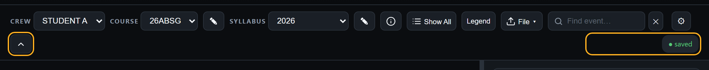<figcaption><span class="tag drawn">Drawn</span>The other way: the two lines 2 closer together, so the bar stays as tall as before</figcaption></figure>
    <div class="rec">
      <p><b>Recommended:</b> leave it as built. The difference is 2, and only on a narrow desktop window, and the chart below loses nothing you would notice. Moving the lines closer would keep the height, but it shifts both lines on that width.</p>
    </div>
  </section>

  <section class="answer">
    <h2>How to answer</h2>
    <p>Reply "8 leave it" or "8 closer". If you're happy with the rest, say "merge live" and all of round 3 goes live together.</p>
    <p class="lead">Round 4 comes after the Leave War overhaul's plan. It covers the Leave War's gear colour, the legends, the Inputs calendar's gear at 1366 wide, and the typed marks left on the Scheduler Board, the Leave War and the Tracker's chart tools.</p>
  </section>

  <section>
    <h2>Built — your answers to 1–4</h2>
    <p>These are pictures of the built app, not drawings. I pressed every changed button while taking them.</p>
    <div class="pair">
      <figure>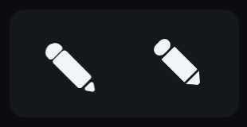<figcaption><span class="tag">Built</span>1 · Left: the ✎ you sent. Right: the app's new pencil, drawn to match it, so your iPhone shows it the same way</figcaption></figure>
      <figure>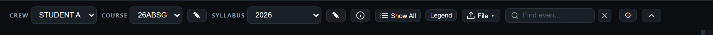<figcaption><span class="tag">Built</span>1 and 3 · The Tracker's bar: your pencil, and CREW · COURSE · SYLLABUS in small capitals</figcaption></figure>
    </div>
    <div class="pair">
      <figure>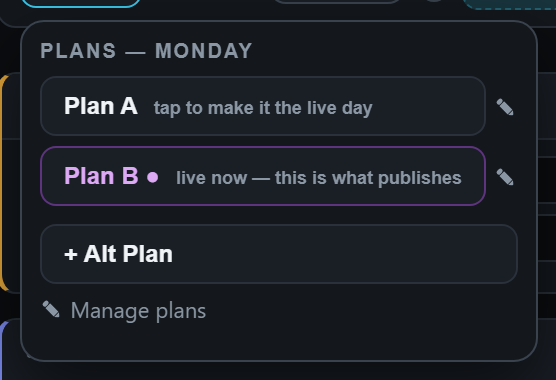<figcaption><span class="tag">Built</span>1 · The Scheduler Board's plans menu</figcaption></figure>
      <figure>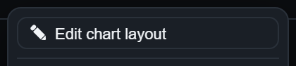<figcaption><span class="tag">Built</span>1 and 2 · The Tracker's Syllabus menu</figcaption></figure>
    </div>
    <div class="pair">
      <figure>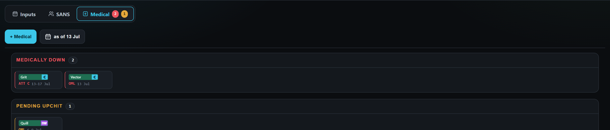<figcaption><span class="tag">Built</span>4 · Medical: "+ Medical" first, on the same edge as "+ Input"; no frame</figcaption></figure>
      <figure>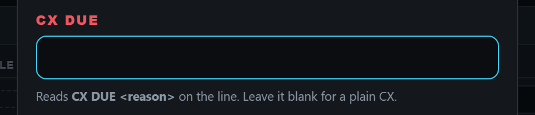<figcaption><span class="tag">Built</span>1 · A row's CX window</figcaption></figure>
    </div>
    <div class="phones">
      <figure>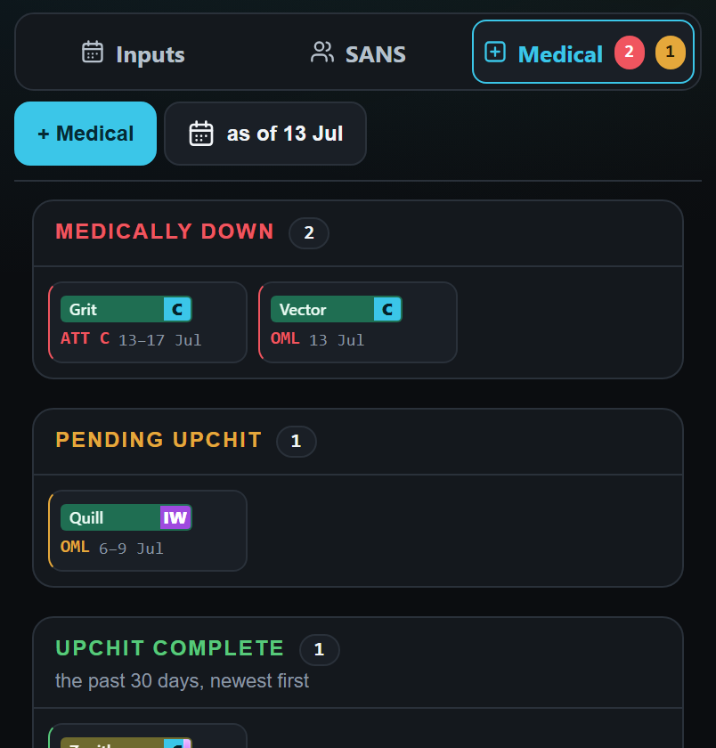<figcaption><span class="tag">Built</span>4 · Phone: Medical</figcaption></figure>
      <figure>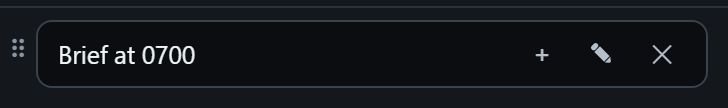<figcaption><span class="tag">Built</span>1 · Phone: a note's pencil, no longer the emoji</figcaption></figure>
      <figure>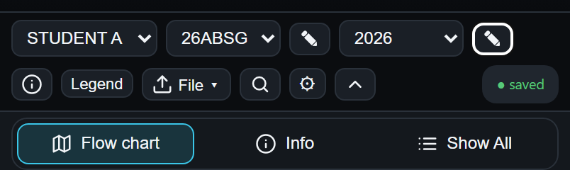<figcaption><span class="tag">Built</span>1 · Phone: the Tracker's bar</figcaption></figure>
    </div>
    <p>While checking I found and fixed two of my own faults. "+ Medical" first sat a little right of where "+ Input" stands. The Inputs list's dates button put its new calendar above the dates instead of beside them. One thing is not checked here: how your iPhone's Safari shows the new pencil. It is now a drawing, so it should look the same as in these pictures.</p>
  </section>

  <h2 style="margin-top:12px">Answered — questions 5–7, as they were put to you</h2>

  <section>
    <h2><span class="n">5</span> Page titles</h2>
    <p>Help and Admin open with a large title. Logic has its name, smaller, at the left of its row of buttons (your answer of 15 Oct). The other pages have no title. On a phone the top bar does not name the page, so these titles are the only place a page says what it is.</p>
    <div class="pair">
      <figure>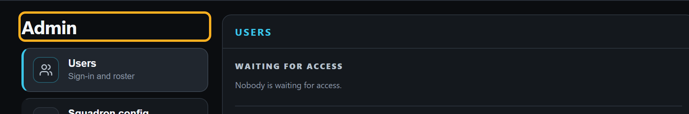<figcaption><span class="tag">Today</span>Admin: a large title</figcaption></figure>
      <figure>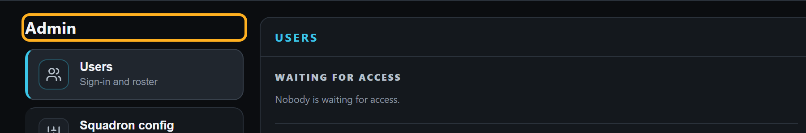<figcaption><span class="tag drawn">Drawn</span>Admin: the size and weight of Logic's name</figcaption></figure>
    </div>
    <div class="pair">
      <figure>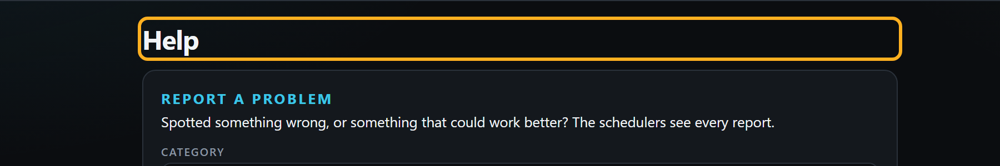<figcaption><span class="tag">Today</span>Help: a large title</figcaption></figure>
      <figure>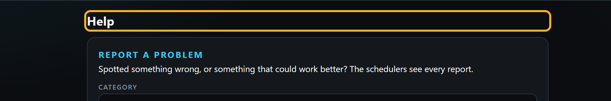<figcaption><span class="tag drawn">Drawn</span>Help: the size and weight of Logic's name</figcaption></figure>
    </div>
    <figure>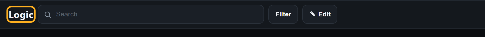<figcaption><span class="tag">Today</span>Logic: its name on its row</figcaption></figure>
    <div class="phones">
      <figure>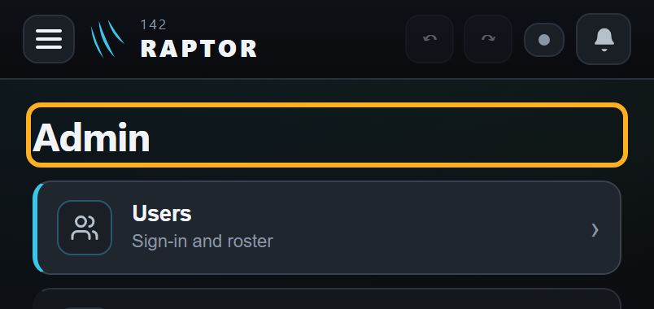<figcaption><span class="tag">Today</span>Phone: Admin</figcaption></figure>
      <figure>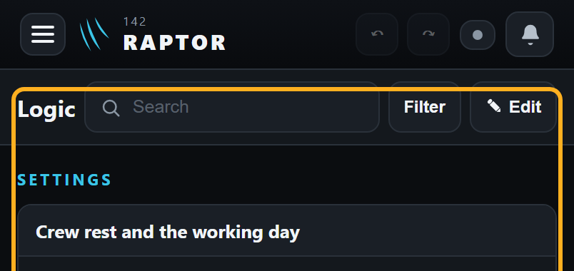<figcaption><span class="tag">Today</span>Phone: Logic</figcaption></figure>
      <figure>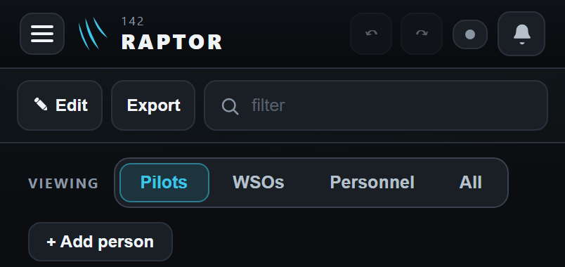<figcaption><span class="tag">Today</span>Phone: Quals, no title</figcaption></figure>
    </div>
    <div class="rec">
      <p><b>Recommended:</b> Help's and Admin's titles take Logic's size and weight, and keep their place. All three pages that carry a name then show it alike. The pages without one stay as they are. A title on those would add a row to working screens that are full already.</p>
    </div>
  </section>

  <section>
    <h2><span class="n">6</span> The Inputs list's two buttons on a desktop</h2>
    <p>On a desktop, the Inputs list's "+ Input" and dates button are 44 tall. Every other button on the Inputs page is 36, and so are these same two buttons on a phone. A change of a button's size is yours to decide (your answer of 2 Oct).</p>
    <div class="pair">
      <figure>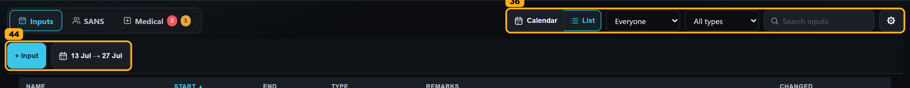<figcaption><span class="tag">Today</span>"+ Input" and the dates button 44 tall; the rest of the page 36</figcaption></figure>
      <figure>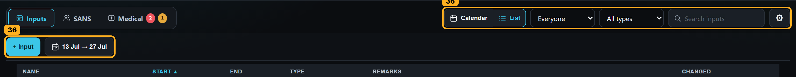<figcaption><span class="tag drawn">Drawn</span>Both at 36</figcaption></figure>
    </div>
    <div class="rec">
      <p><b>Recommended:</b> both at 36, as on a phone and as on the rest of the Inputs page. Nothing moves, and the words stay the same.</p>
    </div>
  </section>

  <section>
    <h2><span class="n">7</span> The Tracker's bar: one button height</h2>
    <p>The Tracker's bar mixes heights. On a desktop the three dropdowns are 30 tall, the pencils, ⓘ, Show All and File 23, Legend 20 and the gear 22. On a phone the dropdowns are 26 and the buttons 20–23.</p>
    <div class="pair">
      <figure>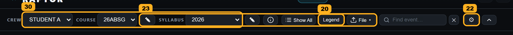<figcaption><span class="tag">Today</span>Desktop: 30, 23, 20 and 22</figcaption></figure>
      <figure>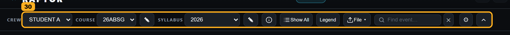<figcaption><span class="tag drawn">Drawn</span>Desktop: every control 30, as the dropdowns</figcaption></figure>
    </div>
    <div class="phones">
      <figure>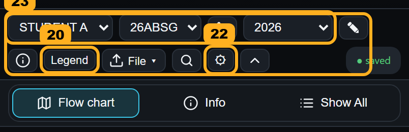<figcaption><span class="tag">Today</span>Phone: 26, 23, 20 and 22</figcaption></figure>
      <figure>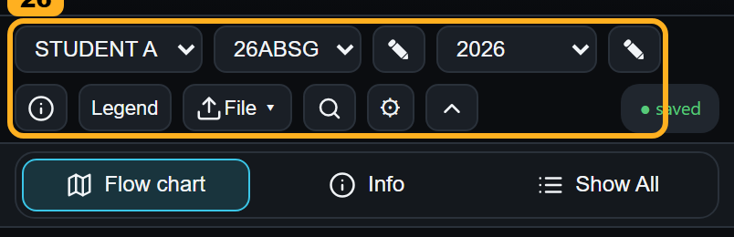<figcaption><span class="tag drawn">Drawn</span>Phone: every control 26</figcaption></figure>
    </div>
    <div class="rec">
      <p><b>Recommended:</b> every control on the bar as tall as its dropdowns: 30 on a desktop, 26 on a phone. The bar grows no taller, because the dropdowns already set its height.</p>
      <p>Left as they are: the schedule pages', the Scheduler Board's and the Leave War's rows (26–30). They are dense working screens and stay within a few points of each other. Quals' Pilots / WSOs switch (28) is a switch under its buttons, not a button row.</p>
    </div>
  </section>


  <h2 style="margin-top:12px">Answered — questions 1–4, as they were put to you</h2>

  <section>
    <h2><span class="n">1</span> Every pencil drawn the same way</h2>
    <p>The app draws its pencil two ways. In an input window's title box and on the Tracker's bar it is a drawing (your rulings of 15 Oct and 21 Oct), tip bottom right. In ten other places it is still a typed character, ✎. One of them, a note in a day on the Inputs calendar, uses a different one, ✏, which your iPhone draws as a coloured emoji. (This test browser has no emoji, so it shows as a white bar.)</p>
    <div class="pair">
      <figure>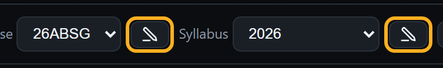<figcaption><span class="tag">Today</span>The drawn pencil, on the Tracker's bar</figcaption></figure>
      <figure>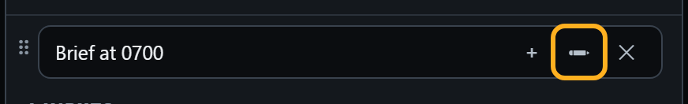<figcaption><span class="tag">Today</span>Inputs calendar, a note in a day: the ✏ emoji</figcaption></figure>
    </div>
    <h3>The typed pencils, today and drawn</h3>
    <div class="pair">
      <figure>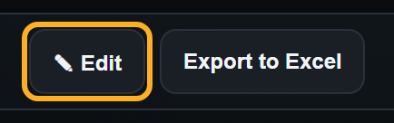<figcaption><span class="tag">Today</span>Quals: "✎ Edit" (Logic's is the same)</figcaption></figure>
      <figure>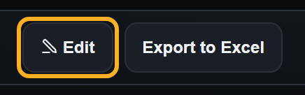<figcaption><span class="tag drawn">Drawn</span>Quals: the drawn pencil</figcaption></figure>
    </div>
    <div class="pair">
      <figure>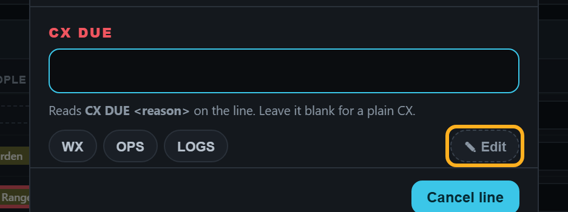<figcaption><span class="tag">Today</span>Scheduler Board, a row's CX window: "✎ Edit"</figcaption></figure>
      <figure>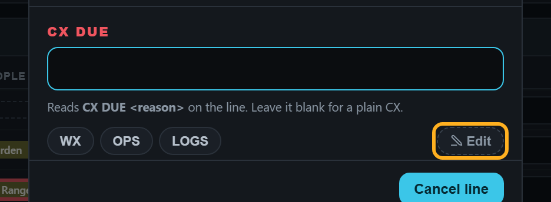<figcaption><span class="tag drawn">Drawn</span>The same, drawn pencil</figcaption></figure>
    </div>
    <div class="pair">
      <figure><figcaption><span class="tag">Today</span>Scheduler Board, Templates: "✎ Manage templates"</figcaption></figure>
      <figure>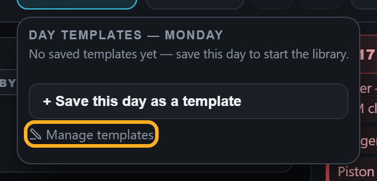<figcaption><span class="tag drawn">Drawn</span>The same, drawn pencil</figcaption></figure>
    </div>
    <div class="pair">
      <figure>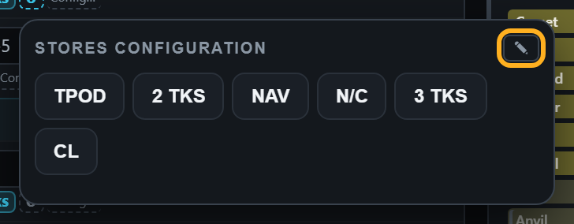<figcaption><span class="tag">Today</span>A jet's stores list: the ✎ that edits the list</figcaption></figure>
      <figure><figcaption><span class="tag drawn">Drawn</span>The same, drawn pencil</figcaption></figure>
    </div>
    <div class="pair">
      <figure><figcaption><span class="tag">Today</span>Inputs list, dates pop-up: "✎ Default window" (admin only)</figcaption></figure>
      <figure>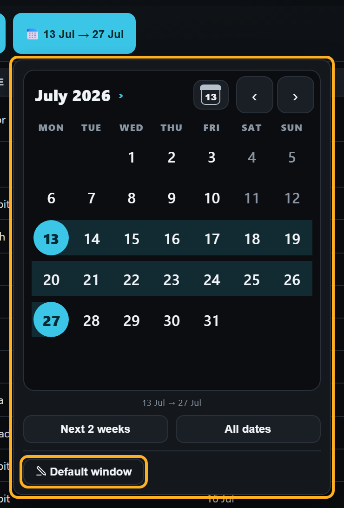<figcaption><span class="tag drawn">Drawn</span>The same, drawn pencil</figcaption></figure>
    </div>
    <div class="pair">
      <figure>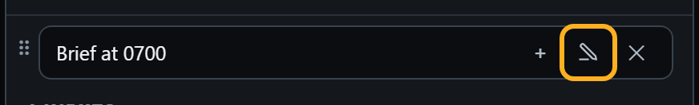<figcaption><span class="tag drawn">Drawn</span>Inputs calendar note: the drawn pencil in place of ✏</figcaption></figure>
      <figure>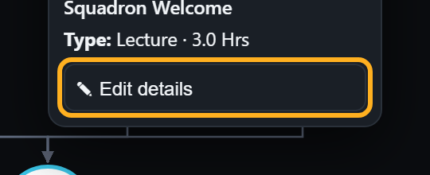<figcaption><span class="tag">Today</span>Tracker, a ball's pop-up: "✎ Edit details"</figcaption></figure>
    </div>
    <div class="pair">
      <figure>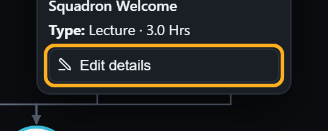<figcaption><span class="tag drawn">Drawn</span>The same, drawn pencil</figcaption></figure>
      <div class="phones">
        <figure class="sm">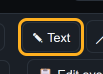<figcaption><span class="tag">Today</span>Edit chart layout: "✎ Text"</figcaption></figure>
        <figure class="sm">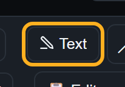<figcaption><span class="tag drawn">Drawn</span>Drawn pencil</figcaption></figure>
      </div>
    </div>
    <p>Not pictured: the board's plans menu ("✎ Manage plans", and a ✎ beside each saved plan). It looks like "Manage templates" above, but the demo has no saved plan, so it does not show. The Tracker's Course and Syllabus menus are in question 2's pictures.</p>
    <div class="rec">
      <p><b>Recommended:</b> every typed pencil becomes the drawn pencil, tip bottom right. Nothing moves, and no button changes what it does. Two places keep the typed ✎ because a drawing cannot go there: inside a sentence of help text, and after an edited chart's name in the Tracker's Syllabus list.</p>
    </div>
  </section>

  <section>
    <h2><span class="n">2</span> The Tracker's menus: line icons</h2>
    <p>In round 2 the Tracker's bar got the app's line icons. Inside its menus and on its Students card the marks are still typed: ⇅ Reorder, ⧉ Duplicate, ⇪ Import, ⤓ Export, × on each student, and 🗑 Delete. Your iPhone draws 🗑 as a coloured emoji.</p>
    <div class="pair">
      <figure>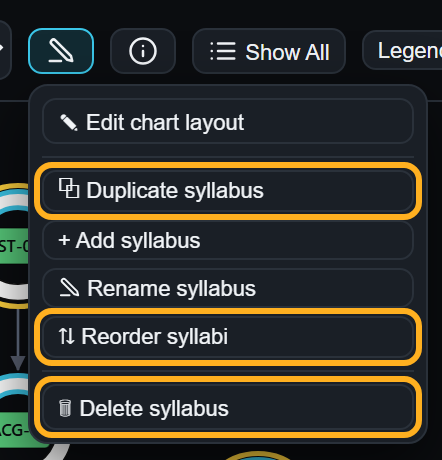<figcaption><span class="tag">Today</span>Syllabus menu (the pencil ✎ items are question 1's)</figcaption></figure>
      <figure>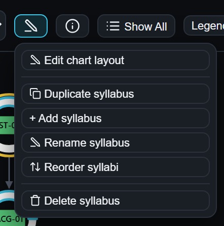<figcaption><span class="tag drawn">Drawn</span>Line icons, and question 1's drawn pencil</figcaption></figure>
    </div>
    <div class="pair">
      <figure>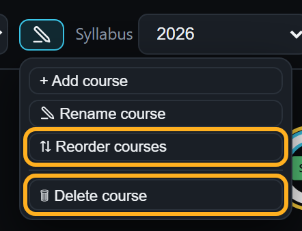<figcaption><span class="tag">Today</span>Course menu</figcaption></figure>
      <figure><figcaption><span class="tag drawn">Drawn</span>Course menu</figcaption></figure>
    </div>
    <div class="pair">
      <figure><figcaption><span class="tag">Today</span>File menu</figcaption></figure>
      <figure><figcaption><span class="tag drawn">Drawn</span>File menu: Import's arrow matches File's own</figcaption></figure>
    </div>
    <div class="pair">
      <figure><figcaption><span class="tag">Today</span>Students card: ⇅ Reorder and × on each name (their pencils are already drawn)</figcaption></figure>
      <figure><figcaption><span class="tag drawn">Drawn</span>Students card</figcaption></figure>
    </div>
    <div class="phones">
      <figure><figcaption><span class="tag">Today</span>Phone: Syllabus menu</figcaption></figure>
      <figure><figcaption><span class="tag drawn">Drawn</span>Phone: Syllabus menu</figcaption></figure>
    </div>
    <p>Not pictured: the empty Tracker's "⇪ Import a file…", which shows only when there is no course. It would get the same arrow as Import.</p>
    <div class="rec">
      <p><b>Recommended:</b> the line icons, as drawn. Nothing moves, and no button changes what it does.</p>
      <p>One thing to know: the Scheduler Board ("⇅ Sort all", "▤ Templates") and the Leave War ("⇅ Rearrange", "◷ OIL tracker") use typed marks too. If you say yes here, the Tracker's ⇅ is drawn while the board's and the Leave War's stay typed for a while. I've kept those two for round 4, with the Leave War's other items, after the Leave War overhaul's plan.</p>
    </div>
  </section>

  <section>
    <h2><span class="n">3</span> The labels before a box</h2>
    <p>Quals, the Leave War, Help and Admin put small spaced capitals before a box or a row of buttons: "VIEWING", "PERIOD", "STAGE", "CATEGORY". Only the Tracker uses ordinary grey words: "Crew", "Course", "Syllabus". On a phone the Tracker shows no labels, so this is the desktop only.</p>
    <div class="pair">
      <figure><figcaption><span class="tag">Today</span>Tracker: ordinary grey words</figcaption></figure>
      <figure><figcaption><span class="tag drawn">Drawn</span>Tracker: small spaced capitals, as Quals'</figcaption></figure>
    </div>
    <div class="pair">
      <figure><figcaption><span class="tag">Today</span>Quals: "VIEWING"</figcaption></figure>
      <figure><figcaption><span class="tag">Today</span>Help: "CATEGORY", "WHAT HAPPENED"</figcaption></figure>
    </div>
    <figure><figcaption><span class="tag">Today</span>Leave War: "PERIOD", "STAGE", "BIDDING ON", "UNDER-MANNED"</figcaption></figure>
    <div class="rec">
      <p><b>Recommended:</b> the Tracker's three labels take the small spaced capitals, in the same size, weight and grey as Quals' "VIEWING". The words stay the same, and nothing on the bar moves.</p>
    </div>
  </section>

  <section>
    <h2><span class="n">4</span> The Medical tab's top row</h2>
    <p>The Inputs list and the Medical tab each have one filled button that adds something, but they stand at opposite ends. "+ Input" is first, at the left (your answer of 10 Oct). "+ Medical" is at the right end (your answer of 17 Oct). They also differ in two smaller ways. The Medical tab sits inside a bordered frame (3) that the Inputs list does not have. And the Inputs list's dates button (2) wears a coloured 📅 emoji, while Medical's "as of" wears the app's line calendar.</p>
    <div class="pair">
      <figure><figcaption><span class="tag">Today</span>Inputs list: 1 "+ Input" first, 2 the dates button's 📅 emoji</figcaption></figure>
      <figure><figcaption><span class="tag drawn">Drawn</span>Inputs list: the line calendar, as Medical's</figcaption></figure>
    </div>
    <div class="pair">
      <figure><figcaption><span class="tag">Today</span>Medical: 1 "+ Medical" at the right end, 3 the frame</figcaption></figure>
      <figure><figcaption><span class="tag drawn">Drawn</span>Medical: "+ Medical" first, as "+ Input"; no frame</figcaption></figure>
    </div>
    <div class="phones">
      <figure><figcaption><span class="tag">Today</span>Phone: Inputs list</figcaption></figure>
      <figure><figcaption><span class="tag">Today</span>Phone: Medical</figcaption></figure>
      <figure><figcaption><span class="tag drawn">Drawn</span>Phone: Medical</figcaption></figure>
    </div>
    <div class="rec">
      <p><b>Recommended:</b> one place for the add button on all the Inputs page's tabs. "+ Medical" stands first, at the left, where "+ Input" stands. This changes your 17 Oct answer for the button's place only: its look, its size and the window it opens stay the same. The frame round the Medical tab goes; its three sections keep their own boxes. The Inputs list's dates button wears the line calendar in place of the emoji.</p>
    </div>
  </section>

  <p class="lead">Your answers: question 1, your pencil everywhere (the picture you sent); 2, 3 and 4, yes; 5, 6 and 7, "yes all".</p>
</main>

<script>
document.addEventListener('click', e => {
  const z = document.querySelector('.zoom')
  if (z) { z.remove(); return }
  const img = e.target.closest('figure img'); if (!img) return
  const d = document.createElement('div'); d.className = 'zoom'
  const big = document.createElement('img'); big.src = img.src; big.alt = img.alt
  d.appendChild(big); document.body.appendChild(d)
})
document.addEventListener('keydown', e => { if (e.key === 'Escape') document.querySelector('.zoom')?.remove() })
</script>
